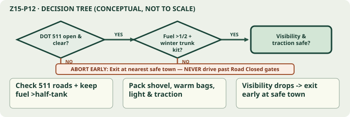

Z15-P12 · Disaster scenarios · New manuscript
Make conservative winter highway abort decisions before whiteouts trap vehicles
Prevent fatal roadside strandings and multi-car pileups by halting winter trips early at safe towns or staying home.
When it applies · Driving across rural plains, interstates, or forested highways during snowstorms, ground blizzards, or freezing rain.
Equipment · State DOT 511 road-condition app/radio, winter car kit (blankets, shovel, sand/traction, water, snacks, headlamp, charger), and ≥half tank fuel.

Actions
- Check live state DOT road reports (such as Minnesota 511) AND NWS forecasts BEFORE leaving—Remember clear blue sky plus 35 mph wind over open farmland still generates zero-visibility ground blizzards and black-ice whiteouts.[D10, D02, N07]
- Keep winter gas tanks above HALF-FULL at all times and pack a real winter trunk kit (wool blankets/sleeping bags, dry hats/mittens, metal shovel, traction sand/cat litter, tow strap, jumper pack, headlamp, snacks, water, high-visibility cloth).[D10, T12]
- Exit early into a safe open town, motel, or rest stop the moment visibility drops, wipers freeze solid, or plows pull off the road—NEVER push past closed-road gates or follow tail lights blindly into whiteouts.[D10, N07]
Failure recognition · Driving past a "Road Closed" winter gate on a rural highway at dusk trying to beat a blizzard home, getting buried in a six-foot snowdrift.[D10]
Verify · Confirm 511 road status open, fuel >half-tank, full winter trunk kit loaded, and someone knows your route and ETA before departing.[D10, E01]
Stop or change course · Freezing rain glaze, zero-visibility whiteout, or DOT "No Travel Advised" / closed gates mandate halting immediately at the nearest safe town.[D10]
Evidence and editorial notes
- D02 · Minnesota HSEM · Weather Awareness and Preparedness (current web edition)
- Section: Minnesota Severe Weather and Winter Hazard Seasonal Profile · Conditions: Upper Midwest and Minnesota households across annual hazard seasons
Support: Anticipate Minnesota's distinct multi-hazard calendar: spring snowmelt flooding, spring–summer severe thunderstorms, derechos, tornadoes, and extreme heat, wildfire smoke plumes, and autumn–winter blizzards, ice storms, and wind-chill emergencies.
Limitations: Weather extremes increasingly occur outside historical peak months; rely on live NWS forecasts over calendar assumptions. · Conflicting evidence: None; grounds regional Upper Midwest applicability in Z15.
Editorial note: Connects seasonal hazard preparedness to local agency advisories. · Specialist reviewer: Regional emergency management and meteorology
Primary source · checked 2026-11-24 - D10 · FEMA / Ready.gov · Winter Weather (current web edition)
- Section: Blizzards, Ice Storms, and Multi-Day Freezing Blackouts · Conditions: Blizzard Warnings, Ice Storm Warnings, and extreme wind-chill emergencies
Support: Complete supply, fuel, and medication staging before storm onset, stay off snow/ice-closed roads, prepare safe non-combustion warmth consolidation indoors, keep vents/exits clear of snowdrifts, and evacuate to community warming shelters early if indoor heat fails.
Limitations: Ice storms down overhead power lines and trees simultaneously, delaying utility restoration for days across wide areas. · Conflicting evidence: None; connects Z15 winter disaster response with Z12/Z13.
Editorial note: Grounds winter-storm travel halts and warming-center transitions. · Specialist reviewer: Cold-weather emergency management
Primary source · checked 2026-11-24 - E01 · Minnesota DNR · Safety in State Forests (current web edition)
- Section: Before your trip and while visiting · Conditions: State-forest travel and backcountry planning
Support: Know the route, check conditions, carry navigation and safety equipment and share trip details.
Limitations: Conditions and trail maintenance vary seasonally across forest units. · Conflicting evidence: None; aligns with NPS-H.
Editorial note: Foundation for trip planning and pre-departure risk checks. · Specialist reviewer: Land management and search and rescue
Primary source · checked 2026-11-24 - N07 · NWS · Fog Safety (current web edition)
- Section: Fog Safety > Visibility Loss and Travel Hazards · Conditions: Dense fog, valley mist, sea fog and blowing-snow whiteout
Support: Fog and whiteout collapse visual landmarks and depth perception rapidly, causing disorientation and unintentional terrain/traffic hazards; halt exposed travel early and rely on verified checkpoints or stay put.
Limitations: Compass bearings alone cannot reveal hidden cliffs, thin ice or drop-offs in zero visibility. · Conflicting evidence: Aligns with B014-P11 whiteout guidance.
Editorial note: Supports whiteout/fog stop thresholds and short-leg navigation boundaries. · Specialist reviewer: Meteorology and search and rescue
Primary source · checked 2026-11-24 - T12 · FEMA / Ready.gov · Build a Kit (current web edition)
- Section: Build a Kit > Basic Disaster Supplies Kit and Maintenance · Conditions: Overnight and multi-day emergency readiness
Support: Assemble water, food, light, NOAA/battery radio, first aid, whistle, local maps, sanitation, medications, and backup power; inspect expiration dates and batteries regularly.
Limitations: Standard 72-hour kits do not cover extended multi-day isolation without replenishment or specialized cold/medical items. · Conflicting evidence: None; links kit readiness to periodic maintenance checks.
Editorial note: Supports equipment readiness, inspection, and overnight-emergency cards. · Specialist reviewer: Emergency management and field readiness
Primary source · checked 2026-11-24
Source lineage · NWS Winter Storm and MN HSEM; new manuscript · Classification · New manuscript.